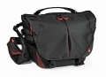

曼富图全新的黄蜂单肩包扩大了专业摄影师和摄影爱好者对专业摄影包的选择：优秀的设计理念和一贯对功能的注重，使黄蜂单肩包能满足快速携带移动拍摄的需求。同样，为了给使用者良好的长时间户外背负体验，也搭载有AirSupport透气背负系统，三点式稳定背负。此外为方便取用器材，还创新的加入EasyGrip背带系统，只需一个手就可以在瞬间调节主背带的长短。此外，背带还可调节以满足左右不同使用者的日常使用习惯。